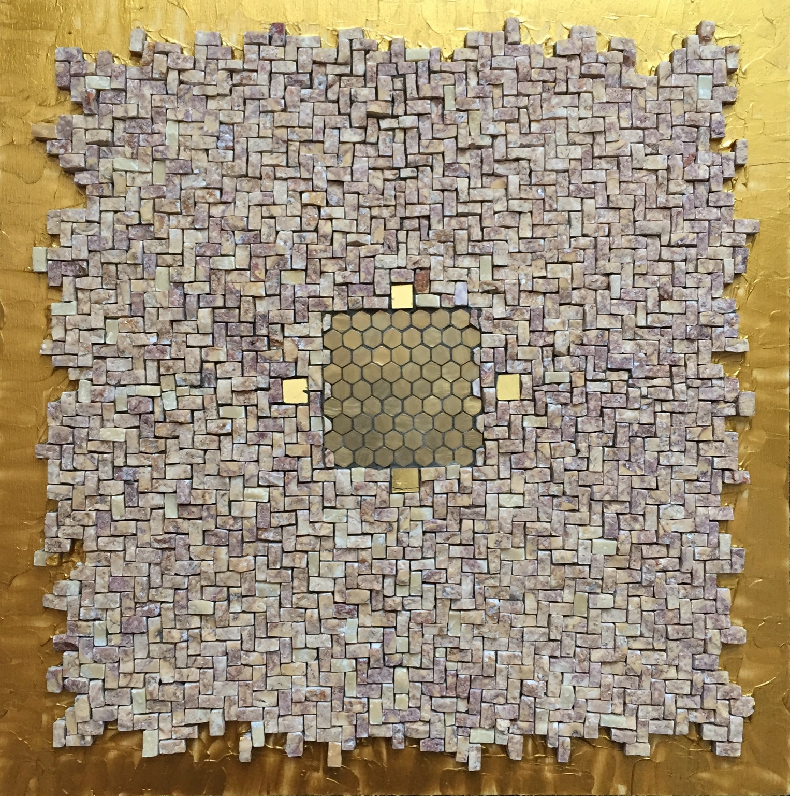
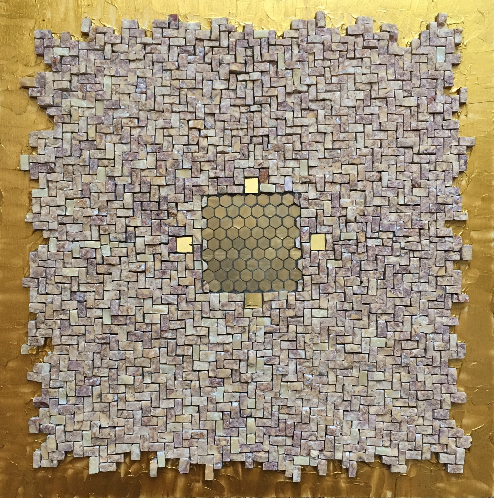

Un viaggio nei 4 elementi attraverso la materia, la luce e l'intuizione
Aria, Acqua, Terra, Fuoco – Amore, Passione, Felicità, Morte
“Ogni tessera è un pensiero, ogni frammento un'emozione.”
Le mie opere nascono dal desiderio di unire tecnica, materia e sentimento.
Testo critico a cura della Prof.ssa Concetta Tarsia - Storico Critico d'arte